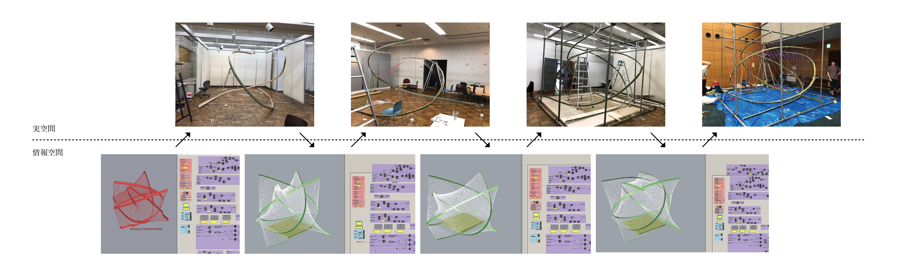

Policy.1

近代以降、建築における各分野（設計、施工）は高度に専門化し、設計者、施工者、使い手は分断されました。しかしながら、熟練技能者に依存した結果として、技能者の減少によりこれまでのような建築の質が保てなくなってきたり、20世紀後半のデジタル技術の発展に起因する建築形態の複雑化に生産側が追いついていなかったりと、この三者の分断による弊害が20世紀の建築には見られるといえます。近代以前には、この三者はより緊密な関係にあり、お互いに影響を及ぼしあうような関係であったはずです。この三者を接続する役割としてのデジタル技術を活用しながら、使い手と建築との距離をより近づけていくようなプロセスによって、建築をつくることを目指しています。
Policy.2

設計は建築の形態と素材を決めることであるともいえますが、形態・素材の決定が道具・技能といった生産と分断された結果、生産は単に設計に制約を与える存在となり、設計は熟練技能に依存、必要以上の高い精度を要求するといったネガティブな関係になってしまっています。形態・素材・道具・技能は歴史的に見てもお互いに影響を及ぼしながら発展してきたものであり、近年のデジタルファブリケーションやシミュレーション解析によりその関係はより緊密になりつつあります。形態・素材・道具・技能を同時に考え、互いにポジティブな影響を及ぼしあうことでいい建築を作ることを目指しています。
Policy.3
